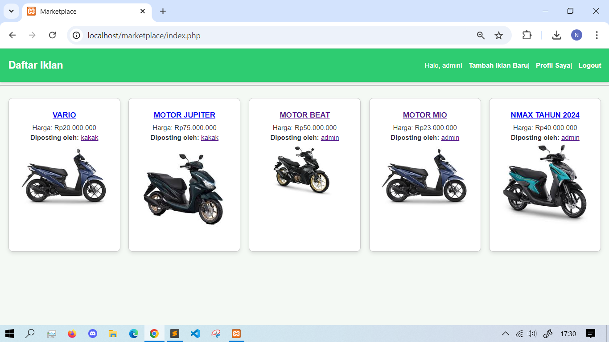
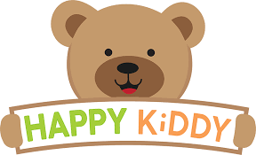
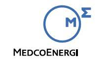
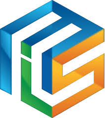

Nirwana Duckakis
IT Programer / Developer, IT Technician, IT Helpdesk, IT Support
Career Objective: Always taking opportunities to upgrade my skills in IT technology, while contributing to meet company needs. / I have a strong ambition to contribute to enhancing the value of the company, particularly in the field of IT, which includes software development, web applications, and other technological solutions. With a deep understanding of client needs, I can assist in developing innovative products that meet market demands. I believe that a strategic and collaborative approach will strengthen the companys position in the technology industry and provide significant added value
Email: duckakis7@gmail.com
Phone: +62 896 0499 0699
Location: Kebon Jeruk, Jakarta Barat, DKI Jakarta, Indonesia
LinkedIn: Nirwana Duckakis
Technical Skills
- HTML, CSS, JavaScript, PHP, MySQL
- Troubleshoot Software & Hardware, CCTV, Printer, Scaner, PC Assembling
Non-Technical Skills
- Analysis, Creativity, Critical Thinking, Problem Solving, Teamwork
Projects
Digital Registration Form for all event needs at Citra Bahana Management

Digital Registration Form for Citra Bahana Manajemen Events
As part of an effort to enhance efficiency and professionalism in managing company events, I designed and developed an innovative Digital Registration Form for all event needs at Citra Bahana Manajemen. This form was created to replace manual processes with a fast, accurate, and user-friendly digital solution.
The primary goal of creating this form is to increase the companys value by improving the participant and event committee experience. With a more organized and automated registration system, this form helps the company reduce data errors, speed up the registration process, and ensure more structured data management.
Key Features:
Responsive & User-friendly Design: Ensures a seamless registration experience on both desktop and mobile devices.
Automation & Data Processing: Reduces administrative workload and enables faster and more effective data management.
Enhanced Professionalism for the Company: Provides a modern and organized impression to event participants and stakeholders.
Data Security: Ensures the protection of participants personal information with reliable encryption systems.
With this digital registration form, Citra Bahana Manajemen can now host events more professionally and efficiently, while enhancing the company’s image in the eyes of clients and business partners.
Link: Registration Form
Podium Application for Cerdas Cermat at BULAN K3 NASIONAL HSSE UID JAYA FESTIVAL 2025

To enhance the efficiency and excitement of the Cerdas Cermat competition during the BULAN K3 NASIONAL HSSE UID JAYA FESTIVAL 2025, I developed a Podium Application designed specifically to manage real-time interaction between participants and the MC, while also displaying the results live to the audience.
In this event, the MC presents the questions, and participants compete to press the button first to answer. The operator is responsible for entering the participants answer (correct or incorrect) into the application, which then automatically updates the participants score. Afterward, the operator displays the updated scores and other information on a large screen visible to all participants and the audience, ensuring transparency and clarity throughout the competition.
Key Features:
Real-time Button Response: The system detects the participant who presses the button first, ensuring the competition is fast and orderly.
Score Input by Operator: The operator enters the participants answer (correct or incorrect) into the application, which automatically updates the score.
Results Displayed on the Big Screen: After scores are entered, the operator displays the updated scores and relevant information on a large screen for everyone to see, ensuring transparency and organization.
Organized Process: The application ensures the competition runs smoothly, reducing manual errors and enhancing the experience for both participants and the audience.
Interactive & Professional: Creates a dynamic and professional competition atmosphere, improving the overall quality of the event.
With this Podium Application, the Cerdas Cermat competition at the BULAN K3 NASIONAL HSSE UID JAYA FESTIVAL 2025 runs more efficiently, fairly, and engagingly. The technology implemented ensures smooth event execution while providing an interactive experience, boosting professionalism and excitement throughout the competition.
Link: Podium
Marketplace
Description: Our marketplace is an online platform dedicated to buying and selling motorcycles. It connects buyers with sellers, offering a wide variety of motorcycles, accessories, and related services. Users can browse through detailed listings, compare different models, and make secure transactions all in one place. The platform ensures a smooth, user-friendly experience with features like secure payment options, reliable customer support, and easy navigation. Whether you're looking for a new or used motorcycle, our marketplace provides a convenient and efficient way to find exactly what you need.
Link: Market Place
Work Experience
-
 PT Citra Bahana Manajemen - IT Support / Pogramer Developer (February 2025 - Now)
PT Citra Bahana Manajemen - IT Support / Pogramer Developer (February 2025 - Now)Responsible for ensuring the smooth operation of IT needs for BPSDM users. Also serves as a Programmer / Developer for application development based on the needs of the Event Organizer company.
-

PT Haguro Inspira Mandiri - IT Support / Helpdesk (April 2023 - April 2024)
Responsible for ensuring the smooth operation of IT needs, including monitoring, analysis, maintenance, technical support, and troubleshooting of IT equipment such as PC, printer, CCTV, and internet networks in offices and stores. Currently, there are more than 30 stores spread across Indonesia.
-

PT Medco Energi Internasional (Vendor HPKOM) - IT Deployment Engineer (February 2022 - February 2023)
Deployment Support Engineer at Energy building refresh the users device by handing over the old device for a new device. also handles troubleshooting on user device needs.
-

PT Mitra Service Infomata - IT Engineer Freelance
Aruba SD-WAN accesspoint Installation Hypernet - Kominfo Project
Staging Bios dan Office 365 Astragraphia Warehouse
ICON+ Hypernet Wifi Activation – Kominfo RPTRA Projects
Staging and Installation Software BPJS user - PT. Harvest Perdana Kompakindo
Android Checker & Maintenance DAV Alfamart
Education
Universitas Satya Negara Indonesia, S.Kom - Teknik Informatika (2017 - 2021), GPA: 3.16